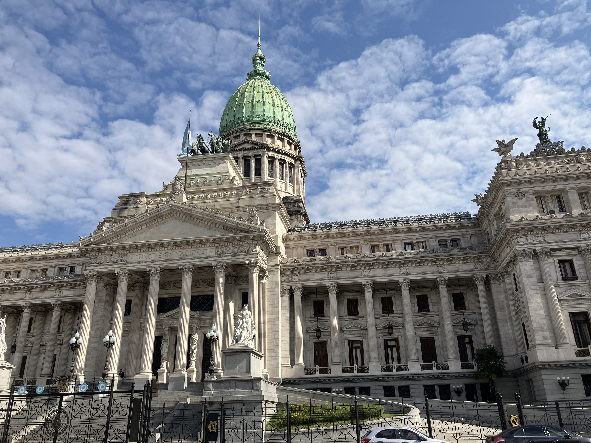
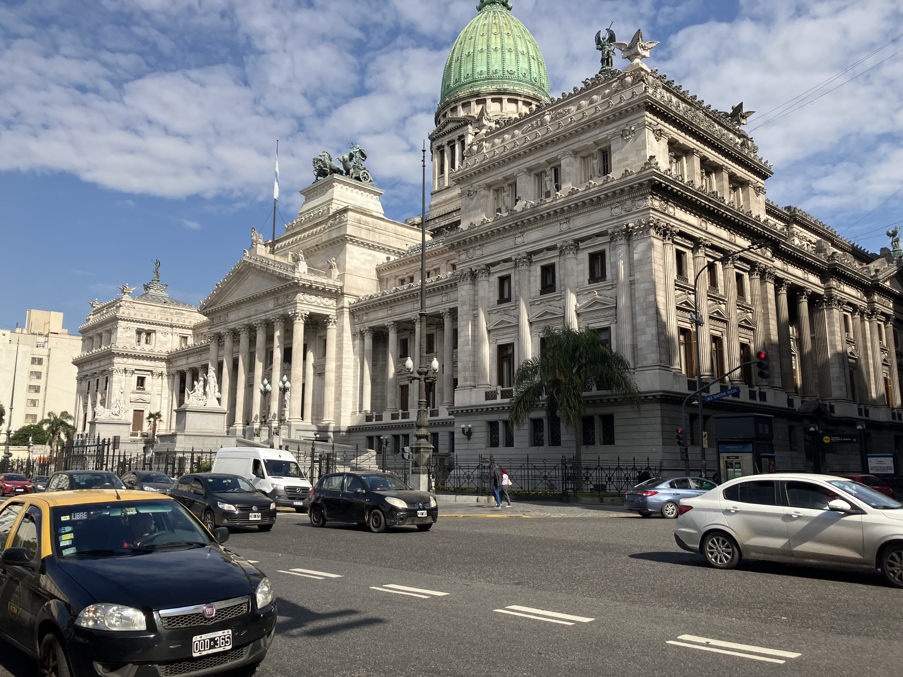
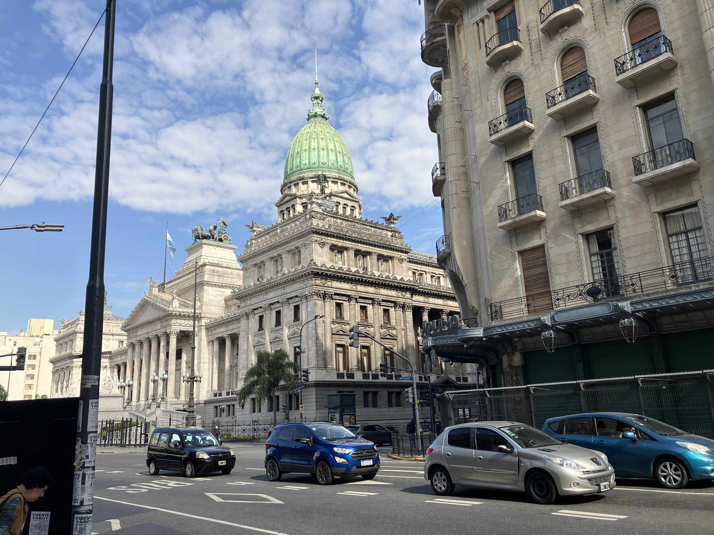
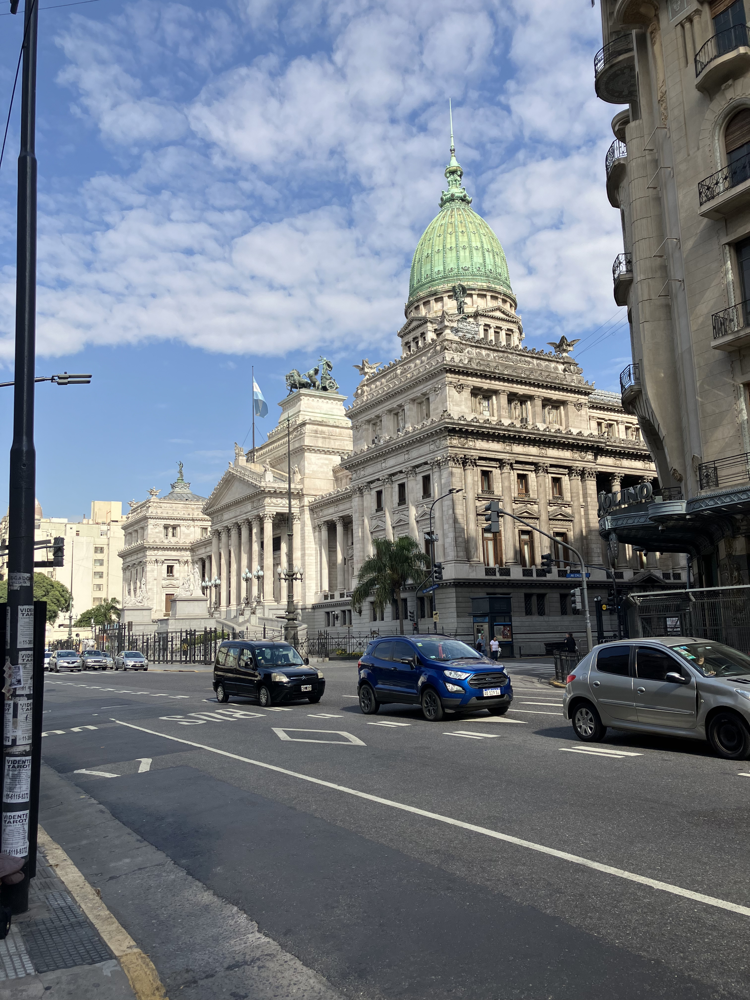
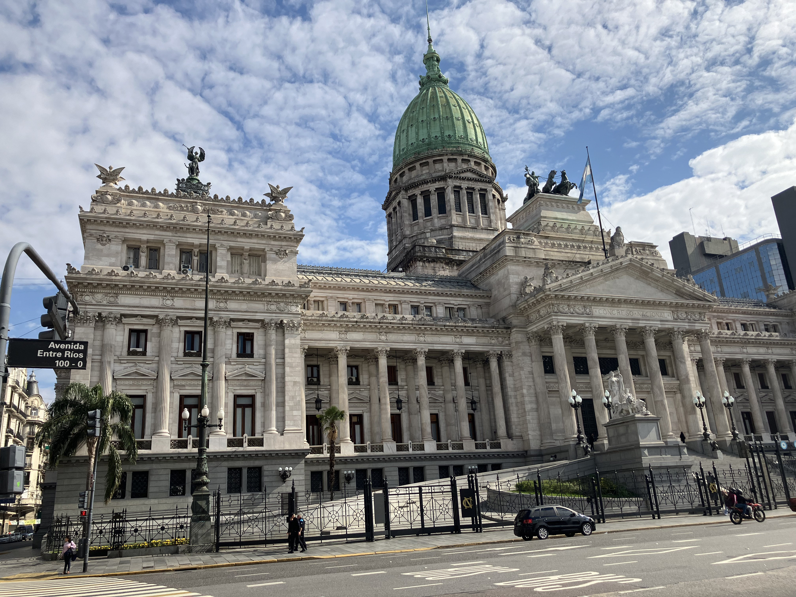
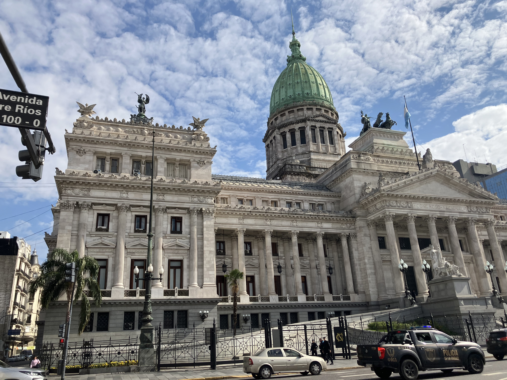
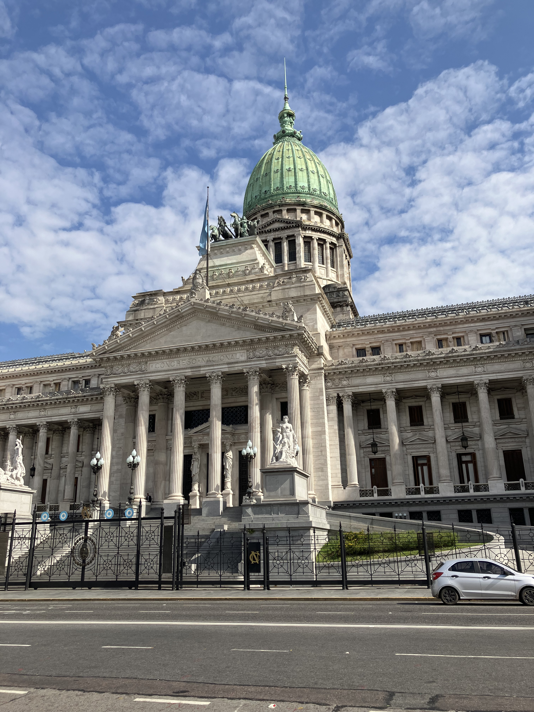
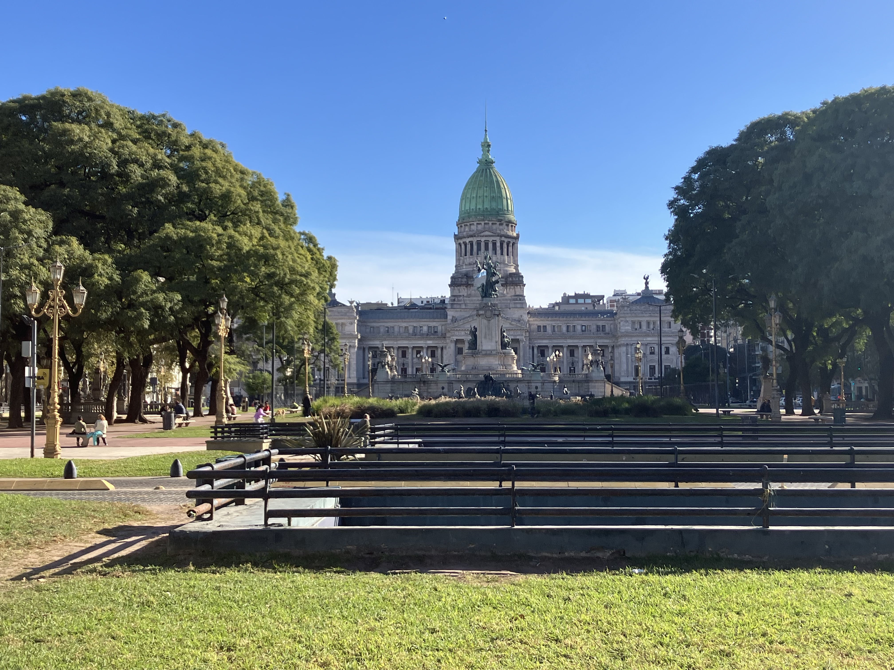

Congreso de la Nación Argentina

Architect: Vittorio Meano, Julio Dormal
Location: Av. Entre Ríos 1033, Buenos Aires
Completed: 1906
Style: Neoclassical / Beaux-Arts
History
The National Congress building was conceived as a symbol of Argentina’s democratic foundations at the turn of the 20th century. Construction began in 1898 and culminated in its inauguration in 1906, during a period of national growth and modernization. Since then, it has served as the seat of legislative power, hosting debates and decisions that have shaped the country’s history.
Architecture
Characterized by its imposing dome and classical composition, the building reflects strong European influences, particularly from Italian and French traditions. Its monumental staircases, Corinthian columns, and sculptural details convey authority and permanence. The expansive interiors house legislative chambers designed to reflect the importance of civic deliberation.
Legacy
As the heart of Argentina’s legislative system, the Congress building embodies the principles of democracy and institutional continuity. Its presence defines one of Buenos Aires’ most significant civic spaces, standing as both a political center and an architectural landmark of national significance.
Gallery






